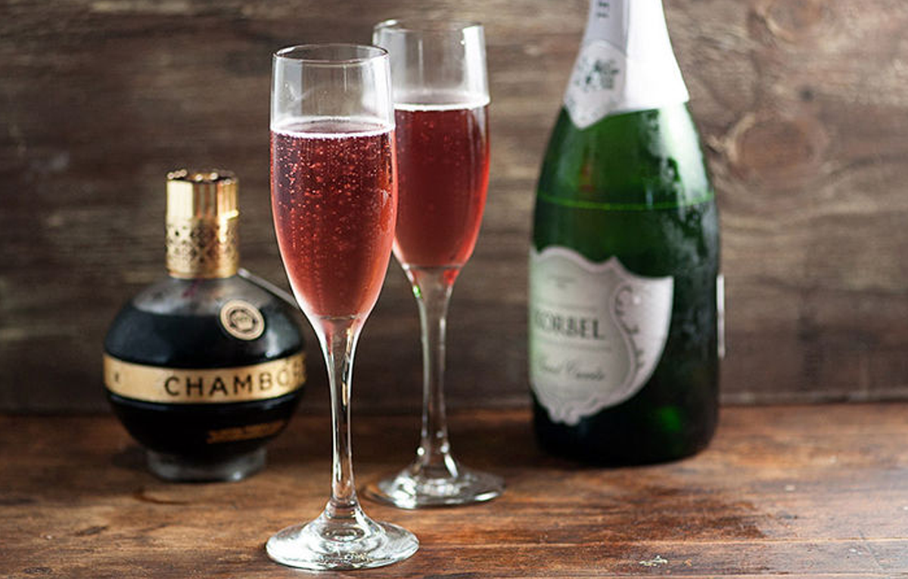

L'insostenibile leggerezza dell'essere
“L'esistenzialismo di milan Kundera”.

Approfondimento:
Il suo romanzo ci dimostra come nella vita tutto quello che scegliamo e apprezziamo come leggero non tarda a rivelare il proprio peso insostenibile.
Forse solo la vivacità e la mobilità dell'intelligenza sfuggono a questa condanna: le qualità con cui è scritto il romanzo,che appartengono a un altro universo da quello del vivere.
Il Kir Royal

Ecco cosa abbinarci:
Il Kir Royal invece prevede l’uso dello Champagne al posto del vino. Si tratta di un cocktail poco alcolico, semplice da fare e che va bene sia come aperitivo, sia come drink a tutto pasto.
INGREDIENTI:
9 cl Champagne
1 cl Crème de cassis
Un aperitivo royale e leggero con Milan Kundera.